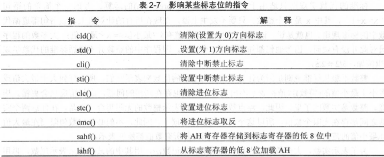

Contents
虽然byte和int8都是一个字节，但是int8是有类型的，表示-128~127，而byte则是无类型的，仅表示一个字节，你可以在里面存放任意一个字节存放得下的数据。
static
b: byte;
qword和int64的区别、lword和int128的区别同上。
static
i64: int64;
i128: int128;
static
qw: qword;
lw: lword;
Note
这些数据不能直接用于mov/add/sub等这些常见的指令的，因为它们超过32位了。
and(source, dest);
or(source, dest);
xor(source, dest);
上面三个操作对应的高级语言语义如下：
dest = dest operator source
and/or/xor的source必须为常量、内存、寄存器，dest必须为内存或者寄存器。这三个的其它要求基本和add/sub这些是一样的。
not(dest);
not对应的高级语言语义如下：
dest = not(dest)
not的dest必须为内存、寄存器。
如果将一个8位的负数（补码表示）扩展为16位，只需要将其高位用符号位进行扩展即可。
如果将一个8位的无符号数扩展为16位，只需要将其高位用0进行扩展即可。
cbw(); // 通过符号扩展将al中的字节转换为ax中的字
cwd(); // 将ax中的字转换为dx:ax中的双字
cdq(); // 将eax中的双字转换为edx:eax中的四字
cwde(); // 将ax中的字转换为eax中的双字
movsx(source, dest); // 符号扩展
movzx(source, dest); // 零扩展
movsx和movzx需要注意一点：
dest的数据宽度必须大于source的数据宽度
shl(count, dest); // 左移
shr(count, dest); // 右移
如果dest为负数，shr操作就会产生意料之外的结果，符号位被0填充，结果变成了正数。这种情况就需要使用如下指令：
sar(count, dest);
rol(count, dest); // 循环左移
ror(count, dest); // 循环右移
如果仅移1个位，则移出的那一位会进入CF标志位。如果多于1位，Intel不保证CF标志位的状态。
如果想让CF中的值也参与循环移位，可以用以下指令：
rcl(count, dest); // 带CF循环左移
rcr(count, dest); // 带CF循环右移
同样的，如果多于1位，Intel不保证CF标志位的状态。
通过上面介绍的逻辑操作就可以操作每个字节中一位或者多位了。
对于EFLAGS寄存器，还有额外的指令提供：
lahf(); // EFLAGS低8位->ah
sahf(); // ah->EFLAGS低8位
static
fltVar1: real32; // 单精度
fltVar1a: real32 := 2.7;
pi: real32 := 3.14159;
DblVar: real64; // 双精度
DblVar2: real64 := 1.23456789e+10;
XPVar: real80; // 扩展精度
XPVar2: real80 := -1.0e-104;
stdout.putr80(r:real80, width:uns32, decpts:uns32);
stdout.putr64(r:real64, width:uns32, decpts:uns32);
stdout.putr32(r:real32, width:uns32, decpts:uns32);
width为输出的宽度，decpts为输出的小数点精度
// 输出科学表达法
stout.pute80(r:real80, width:uns32);
stout.pute64(r:real64, width:uns32);
stout.pute32(r:real32, width:uns32);
stdin.getf();
stdin.get();